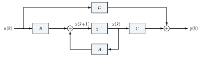
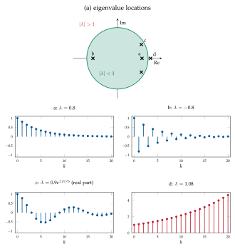

Appendix ADiscrete-time LTI systems in state space
This appendix recalls the notions of systems theory used throughout the notes. Notation is fixed once and for all: \(n\) is the number of state variables, \(p\) the number of inputs and \(q\) the number of outputs. Standard references are, in English, [18, 19, 20] and, in Italian, [21, 22, 23].
A.1 State-space equations and their solution
A discrete-time, linear, time-invariant (LTI) system in state-space form is
with \(x(k)\in\R^n\), \(u(k)\in\R^p\), \(y(k)\in\R^q\) and
The system is SISO if \(p=q=1\) and MIMO otherwise; it is strictly proper if \(D=0\) (the output at time \(k\) does not depend on \(u(k)\)). Figure A.1 shows the corresponding block diagram, where \(z^{-1}\) denotes a one-step delay.

Solution. Iterating the state equation,
and by induction
The matrix \(A^k\) is the state transition matrix. The response is the sum of the free response (due to \(x_0\), with \(u\equiv0\)) and of the forced response (due to \(u\), with \(x_0=0\)): this is the superposition principle.
Impulse response. For a SISO system with \(x_0=0\) and \(u(k)=\delta(k)\) (the discrete impulse, \(\delta(0)=1\), \(\delta(k)=0\) for \(k\neq0\)), (A.2) gives the impulse response
and, by linearity and time invariance, the forced output is the discrete convolution \(y(k)=\sum_{\tau=0}^kw(k-\tau)u(\tau)\). For a MIMO system the impulse response matrix is
whose entry \(w_{ij}(k)\) is the response of output \(i\) to an impulse applied at input \(j\) (all other inputs being zero), and \(y(k)=\sum_{\tau=0}^kW(k-\tau)u(\tau)\). The matrices \(W(k)\), \(k\ge1\), are called Markov parameters.
Changes of coordinates. With \(x=T\tilde x\), \(T\) nonsingular, the system becomes \(\{\tilde A,\tilde B,\tilde C,\tilde D\}=\{T^{-1}AT,T^{-1}B,CT,D\}\); since \(\tilde C\tilde A^{k-1}\tilde B=CA^{k-1}B\), the impulse response matrix (and the transfer matrix below) are invariant with respect to change of coordinates on the state variable. Two such systems are called algebraically equivalent.
A.2 The \(\Z\)-transform
For a sequence \(f(k)\), \(k\ge0\) (vector- or matrix-valued sequences are transformed entry by entry), the (unilateral) \(\Z\)-transform is
defined for \(|z|\) larger than a radius of convergence. Useful transforms and properties:
| \(f(k)\) | \(F(z)\) | property | |
|---|---|---|---|
| \(\delta(k)\) | \(1\) | linearity | \(\Z\{\alpha f+\beta g\}=\alpha F+\beta G\) |
| \(1\) (step) | \(\dfrac{z}{z-1}\) | delay (\(f(k)=0\), \(k<0\)) | \(\Z\{f(k-\tau)\}=z^{-\tau}F(z)\) |
| \(a^k\) | \(\dfrac{z}{z-a}\) | advance | \(\Z\{f(k+1)\}=zF(z)-zf(0)\) |
| \(k\,a^{k}\) | \(\dfrac{az}{(z-a)^2}\) | convolution | \(\Z\{\textstyle\sum_{\tau=0}^kg(k-\tau)f(\tau)\}=G(z)F(z)\) |
| \(A^k\) | \(z(zI-A)^{-1}\) | final value | \(\lim_{k\to\infty}f(k)=\lim_{z\to1}(z-1)F(z)\) (if it exists) |
State-space equations in the \(\Z\) domain. Transforming (A.1) with the advance property, \(zX(z)-zx_0=AX(z)+BU(z)\), hence
These are the \(\Z\)-transforms of (A.2) (compare with \(\Z\{A^k\}=z(zI-A)^{-1}\)).
Transfer function and transfer matrix. The transfer matrix is
the \(\Z\)-transform of the impulse response matrix; its entry \(W_{ij}(z)\) is the transfer function from input \(j\) to output \(i\). Since \((zI-A)^{-1}=\operatorname{adj}(zI-A)/\det(zI-A)\), for a SISO system
a proper rational function: \(m\le n\) (before cancellations), the relative degree is \(n-m\), and \(D\neq0\) iff \(m=n\) (biproper); \(W\) is strictly proper iff \(D=0\). The roots of the denominator after cancelling common factors are the poles of \(W(z)\); they are a subset of the eigenvalues of \(A\) (Section A.6). Dividing numerator and denominator by \(z^n\) one obtains the form in powers of \(z^{-1}\) used in Chapter 6 and Appendix B:
which displays the input–output delay \(n-m\) (the relative degree). Conversely, every proper rational \(W(z)\) admits state-space realizations \(\{A,B,C,D\}\) (e.g. the canonical forms of Appendix B); the realizations of minimal dimension are characterized in Section A.6.
For \(A=\bmat{0&1\\-0.4&1.3}\), \(B=\bmat{0\\1}\), \(C=\bmat{-0.8&1}\), \(D=0\): \(\det(zI-A)=z^2-1.3z+0.4=(z-0.5)(z-0.8)\), \((zI-A)^{-1}B=\frac1{(z-0.5)(z-0.8)}\bmat{1\\z}\), so
The eigenvalue \(0.8\) does not appear as a pole: there is a zero–pole cancellation, whose meaning is explained in Example A.2.
A.3 Natural modes and stability
Natural modes. If \(A\) is diagonalizable, \(A=R\Lambda L=\sum_{i=1}^n\lambda_ir_il_i\T\) (Theorem 2.8), then
the free state response is a combination of the natural modes \(\lambda_i^k\) along the eigenvector directions \(r_i\), with weights \(l_i\T x_0\).
For a real matrix, complex eigenvalues come in conjugate pairs \(\lambda=\rho e^{\pm j\vartheta}\), and the pair generates the real modes \(\rho^k\cos(\vartheta k)\), \(\rho^k\sin(\vartheta k)\) (damped or growing oscillations). A negative real eigenvalue generates an alternating mode. If \(A\) is not diagonalizable, a Jordan block of size \(\nu\) associated with \(\lambda\) generates the modes \(\lambda^k,k\lambda^{k-1},\dots,\binom{k}{\nu-1}\lambda^{k-\nu+1}\) (Chapter 2, advanced topic). The behaviour of each mode is determined by \(|\lambda|\) (Figure A.2):
\(|\lambda|<1\): asymptotically stable (convergent) mode;
\(|\lambda|=1\): simply stable (bounded) mode if \(\lambda\) is simple (or in Jordan blocks of size one only), unstable (polynomially divergent) if it belongs to a Jordan block of size \(\ge2\);
\(|\lambda|>1\): unstable (divergent) mode.

Equilibrium points. For a constant input \(u(k)=\bar u\), a state \(\bar x\) is an equilibrium if \(\bar x=A\bar x+B\bar u\), i.e. \((I-A)\bar x=B\bar u\). With \(\bar u=0\) the origin is always an equilibrium; it is the unique equilibrium iff \(I-A\) is nonsingular, i.e. \(\rank(I-A)=n\), i.e. \(\lambda=1\) is not an eigenvalue of \(A\).
Stability of equilibria. An equilibrium \(\bar x\) (for \(u\equiv\bar u\)) is stable (in the sense of Lyapunov) if for every \(\epsilon>0\) there is \(\delta>0\) such that \(\norm{x_0-\bar x}<\delta\) implies \(\norm{x(k)-\bar x}<\epsilon\) for all \(k\ge0\); it is asymptotically stable if, in addition, \(x(k)\to\bar x\) for \(x_0\) close to \(\bar x\); unstable if it is not stable. Since the deviation \(\tilde x(k)=x(k)-\bar x\) obeys \(\tilde x(k+1)=A\tilde x(k)\) for every equilibrium, all the equilibria of an LTI system have the same stability properties, which are therefore properties of the system (of \(A\)):
asymptotically stable \(\iff\) all the eigenvalues satisfy \(|\lambda_i|<1\), i.e. the spectral radius \(\rho(A)=\max_i|\lambda_i|<1\) (all modes convergent); in this case stability is also global and exponential;
(simply) stable \(\iff\) \(|\lambda_i|\le1\) for all \(i\), and every eigenvalue with \(|\lambda_i|=1\) has \(m_{\mathrm{geo}}(\lambda_i)=m_{\mathrm{alg}}(\lambda_i)\) (all modes bounded);
unstable otherwise: some \(|\lambda_i|>1\), or some eigenvalue on the unit circle with \(m_{\mathrm{geo}}<m_{\mathrm{alg}}\).
Equivalently, \(A\) is asymptotically stable iff for some (and then for every) \(Q\succ0\) the discrete Lyapunov equation \(A\T PA-P=-Q\) has a solution \(P\succ0\).
BIBO stability. The system is bounded-input bounded-output (BIBO) stable if every bounded input produces a bounded forced output; this holds iff \(\sum_k\norm{W(k)}<\infty\), iff all the poles of \(W(z)\) lie in the open unit disc. Asymptotic stability implies BIBO stability; the converse holds for minimal systems, but not in general, because unstable modes may be cancelled in \(W(z)\) (Section A.6).
A.4 Excitability and observability of natural modes
Let \(A\) be diagonalizable. From (A.2) with \(x_0=0\) and an impulse on input \(j\), \(u(k)=e_j\delta(k)\), the state response for \(k\ge1\) is
Definition A.1. The natural mode \(\lambda_i^k\) is excitable (by impulsive inputs) if \(l_i\T B\neq0\) (a row vector with \(p\) entries): it appears in the state response to an impulse applied to some input. It is observable if \(Cr_i\neq0\) (a column vector with \(q\) entries): it appears in the free output response \(y(k)=CA^kx_0=\sum_i\lambda_i^k(Cr_i)(l_i\T x_0)\) for some \(x_0\).
Combining the two, the impulse response matrix and the transfer matrix are
only the modes that are both excitable and observable appear in the impulse response and in the transfer matrix; the others are invisible from input–output data.
A.5 Reachability, controllability, observability and related properties
Definition A.2. The system (A.1) (or the pair \((A,B)\)) is
reachable if every state \(\bar x\) can be reached from \(x_0=0\) in a finite number of steps with a suitable input sequence;
controllable (to the origin) if every initial state can be driven to \(0\) in a finite number of steps;
stabilizable if there is a state feedback \(u=Fx\) such that \(A+BF\) is asymptotically stable (equivalently, the non-reachable part is asymptotically stable).
The system (or the pair \((A,C)\)) is
observable if the initial state \(x_0\) can be uniquely determined from the knowledge of \(u(k)\) and \(y(k)\) on a finite interval \(k=0,\dots,K\);
reconstructable if the current state can be determined from past inputs and outputs;
detectable if there is an output injection \(L\) such that \(A+LC\) is asymptotically stable (equivalently, the non-observable part is asymptotically stable).
Rank tests. From (A.2) with \(x_0=0\),
so the set of states reachable in \(k\) steps is \(\Im[B\;AB\;\cdots\;A^{k-1}B]\). By the Cayley–Hamilton theorem (Chapter 2, advanced topic) this subspace stops growing at \(k=n\). Similarly, stacking the first \(n\) outputs, \([y(0);\dots;y(n-1)]=\Obs\,x_0+(\text{known terms depending on }u)\). This leads to the reachability matrix and the observability matrix
and to the Kalman rank tests:
Controllability is equivalent to \(\Im(A^n)\subseteq\Im(\Rch)\); it coincides with reachability when \(A\) is nonsingular (in discrete time a system with \(A\) nilpotent is controllable even with \(B=0\)). Similarly, reconstructability coincides with observability when \(A\) is nonsingular. Reachability and observability are dual: \((A,B)\) is reachable iff \((A\T,B\T)\) is observable.
The extended matrices \(\Obs_s\) and \(\Rch_\ell\) of Chapters 7 and 8 are the same matrices with \(s\) block rows and \(\ell\) block columns; for \(s,\ell\ge n\) their rank equals the rank of \(\Obs\) and \(\Rch\).
PBH (Popov–Belevitch–Hautus) tests.
(it suffices to check the eigenvalues of \(A\)). Equivalently: \((A,B)\) is reachable iff no left eigenvector \(l\T\) of \(A\) satisfies \(l\T B=0\), and \((A,C)\) is observable iff no right eigenvector \(r\) satisfies \(Cr=0\). Restricting the test to the eigenvalues with \(|\lambda|\ge1\) gives stabilizability and detectability; restricting it to \(\lambda\neq0\) gives controllability.
Modes versus state properties. Comparing the PBH tests with the definitions of Section A.4, for diagonalizable \(A\):
if the eigenvalues are distinct, \((A,B)\) is reachable iff all the natural modes are excitable, and \((A,C)\) is observable iff all the natural modes are observable;
if an eigenvalue \(\lambda\) has \(m_{\mathrm{geo}}(\lambda)>p\) (the number of input channels), the system cannot be reachable (the \(m_{\mathrm{geo}}\) independent left eigenvectors of \(\lambda\) span a space in which some combination \(l\T\) satisfies \(l\T B=0\)): e.g. a SISO system with a repeated eigenvalue with two independent eigenvectors is never reachable. The dual statement holds for observability with \(q\) (number of output channels);
stabilizable iff all the modes with \(|\lambda|\ge1\) are excitable; detectable iff all the modes with \(|\lambda|\ge1\) are observable.
Kalman decomposition. There is always a change of coordinates that splits the state into four parts: reachable and observable, reachable and unobservable, unreachable and observable, unreachable and unobservable. The transfer matrix depends only on the reachable-and-observable part:
Hence a realization is minimal (no realization of the same \(W(z)\) with fewer states exists) iff it is reachable and observable; all minimal realizations of the same \(W(z)\) are algebraically equivalent (related by a unique \(T\)). This is why identification methods can only recover the minimal part of a system (Section 5.2).
A.6 Zero–pole cancellations
SISO systems. By (A.6), the eigenvalues \(\lambda_i\) of the modes that are not excitable or not observable do not appear as poles of \(W(z)\): in the ratio \(N(z)/D(z)\) with \(D(z)=\det(zI-A)\), the corresponding factor \((z-\lambda_i)\) cancels. For a SISO system:
\(W(z)=\dfrac{C\operatorname{adj}(zI-A)B+D\det(zI-A)}{\det(zI-A)}\) has no zero–pole cancellations (numerator and denominator coprime) \(\iff\) the realization is reachable and observable (minimal). The cancelled factors correspond to the modes that are not excitable and/or not observable, and the degree of the denominator after cancellations is the minimal order.
In Example A.1, \((A,B)\) is in controllable canonical form, so it is reachable: \(\Rch=\bmat{0&1\\1&1.3}\) has rank \(2\). The observability matrix \(\Obs=\bmat{C\\CA}=\bmat{-0.8&1\\-0.4&0.5}\) has \(\det\Obs=-0.4+0.4=0\): the system is not observable. Indeed the right eigenvector of \(\lambda=0.8\) is \(r=(1,0.8)\T\) and \(Cr=-0.8+0.8=0\): the mode \(0.8^k\) is unobservable, and it is exactly the cancelled pole. A minimal realization is \(\{0.5,1,1,0\}\) (first order). Note that an unobservable (or unexcitable) mode is still there: if \(|\lambda|\ge1\) it would make the system internally unstable even though \(W(z)\) is BIBO stable.
MIMO systems. For transfer matrices the situation is subtler, because “cancellations” cannot be read off entry by entry:
\(W(z)=\bmat{\frac1{z-0.5}&\frac1{z-0.5}}\) (\(q=1\), \(p=2\)) has a minimal realization of order \(1\): \(A=0.5\), \(B=[1\;1]\), \(C=1\);
\(W(z)=\diag\bigl(\frac1{z-0.5},\frac1{z-0.5}\bigr)\) (\(q=p=2\)) needs order \(2\), although every entry has the same first-order denominator: \(A=0.5I_2\), \(B=C=I_2\).
The poles of a transfer matrix and their multiplicities are defined through its Smith–McMillan form, and the minimal order of a realization equals the McMillan degree \(\delta(W)\) (the degree of the pole polynomial). The general statement is:
A realization \(\{A,B,C,D\}\) of \(W(z)\) is minimal \(\iff\) \((A,B)\) reachable and \((A,C)\) observable \(\iff\) \(n=\delta(W)\) \(\iff\) \(n=\rank H_{n,n}\), the rank of the block Hankel matrix of the Markov parameters (Chapter 7). In a minimal realization the poles of \(W(z)\) (with multiplicities) coincide with the eigenvalues of \(A\); otherwise the poles are a proper subset of the eigenvalues, the missing ones being the eigenvalues of the non-reachable and/or non-observable modes.
A.7 Exercises
Exercise A.1. Compute the reachability and observability matrices of \(A=\bmat{0.5&1\\0&0.5}\), \(B=\bmat{0\\1}\), \(C=\bmat{1&0}\). Is the system minimal? Compute its natural modes and its transfer function.
Exercise A.2. Show that a system with \(A\) diagonal with distinct entries is reachable iff all the rows of \(B\) are non-zero, and observable iff all the columns of \(C\) are non-zero.
Exercise A.3. Prove that \(\Z\{A^k\}=z(zI-A)^{-1}\) and derive (A.4) directly from (A.2) using the convolution property.
Exercise A.4. Find a system that is BIBO stable but not asymptotically stable, and one that is stabilizable but not reachable.
Exercise A.5. For the MIMO system of the fourth exercise of Chapter 7, compute the rank of \(\Obs_s\) for \(s=1,2,3\) and of \(\Rch_\ell\) for \(\ell=1,2\) (observability and reachability indices).